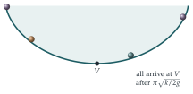

A smooth, axially symmetric bowl has its vertical cross-sections determined by \(s = 2\sqrt{ky}\), where \(s\) is the arc-length measured from its lowest point \(V\), and \(y\) is the height above \(V\). A particle is released from rest at a point on the surface at a height \(h\) above \(V\). Explain why \[\Bigl(\frac{\mathrm{d}s}{\mathrm{d}t}\Bigr)^2 + 2gy\] is constant.
Show that the time for the particle to reach \(V\) is \[\pi\sqrt{\frac{k}{2g}}.\] Two elastic particles of mass \(m\) and \(\alpha m\), where \(\alpha < 1\), are released simultaneously from opposite sides of the bowl at heights \(\alpha^2h\) and \(h\) respectively. If the coefficient of restitution between the particles is \(\alpha\), describe the subsequent motion.
The hook
Release two marbles at the same moment inside a bowl, one from near the rim and one from just above the bottom. Which reaches the bottom first? In an ordinary bowl, the one starting lower usually wins. But there is a bowl in which they always arrive together, wherever they start. It is the tautochrone (Greek for “same time”), and its cross-section is a cycloid, the curve traced by a point on the rim of a rolling wheel.
Huygens discovered this in 1659 and used it to design a pendulum clock whose period would not depend on its swing, correcting the flaw found in Section 11.3. This question proves the tautochrone property in a few lines, by choosing the right variable: distance along the curve, rather than horizontal position.
Before you start
The bowl is smooth. Which forces act on the particle, and which of them does work?
Gravity and the normal reaction. The normal reaction is perpendicular to the surface, and so to the motion, so it does no work. Only gravity does work, and energy is conserved.
Working it through
Stage 1 Energy along the curve
The speed of the particle along the surface is \(\bigl|\frac{\mathrm{d}s}{\mathrm{d}t}\bigr|\), since \(s\) is arc length. Conservation of energy gives \(\frac12m\dot s^2 + mgy =\) constant, so \(\dot s^2 + 2gy\) is constant.■
Stage 2 Simple harmonic motion in \(s\)
Use \(s = 2\sqrt{ky}\) to replace \(y\) by a function of \(s\). What kind of motion does the resulting equation describe?
Since \(y = \frac{s^2}{4k}\), the energy equation becomes \[\dot s^2 + \frac{g}{2k}s^2 = \text{constant} = \frac{g}{2k}s_0^2,\] where \(s_0 = 2\sqrt{kh}\) is the starting arc length (the particle starts at rest). Differentiating, \(2\dot s\ddot s + \frac gk s\dot s = 0\), so \[\ddot s = -\frac{g}{2k}\,s.\] This is simple harmonic motion in the variable \(s\), with \(\omega^2 = \frac{g}{2k}\), whatever the amplitude: \(s = s_0\cos\omega t\).
Stage 3 The time to the bottom
The particle reaches \(V\) (where \(s = 0\)) after a quarter of a period: \[\frac{\pi}{2\omega} = \frac\pi2\sqrt{\frac{2k}{g}} = \pi\sqrt{\frac{k}{2g}},\] which does not depend on \(h\).■
Why does this work? The “restoring force” along the curve is \(g\) times the slope, \(g\frac{\mathrm{d}y}{\mathrm{d}s} = \frac{g}{2k}s\): exactly proportional to the distance from the bottom, measured along the curve. That is the defining property of simple harmonic motion. A particle starting higher has further to go, but is pushed proportionally harder.
Stage 4 Two particles
When do the particles reach \(V\), and how fast are they moving? Who has more momentum?
Both reach \(V\) at the same time \(T = \pi\sqrt{k/(2g)}\), from opposite sides. The speed at \(V\) is \(\omega\) times the amplitude in \(s\), which is proportional to \(\sqrt{\text{height}}\). Let the heavier particle, released from \(h\), have speed \(U\) at \(V\); the lighter one, released from \(\alpha^2h\), has speed \(\alpha U\). Their momenta are \(\alpha m \cdot U\) and \(m \cdot \alpha U\) in opposite directions: equal and opposite. The total momentum at the collision is zero.
With total momentum zero and coefficient of restitution \(\alpha\), what are the velocities just after the collision?
The momentum stays zero, so after the collision the particles again move in opposite directions with momenta of equal size, and their relative speed is \(\alpha\) times the approach speed \(\alpha U + U\). If the lighter particle (mass \(\alpha m\)) now moves at speed \(w\), the heavier (mass \(m\)) moves at speed \(\alpha w\), and \(w + \alpha w = \alpha(1 + \alpha)U\), so \(w = \alpha U\). Each particle bounces back with its speed multiplied by \(\alpha\): the particle of mass \(\alpha m\) leaves at \(\alpha U\), and the one of mass \(m\) at \(\alpha^2U\).
Stage 5 The whole motion
Each particle now climbs back up its own side, to a height reduced by the factor \(\alpha^2\) (since height is proportional to speed squared): the particle of mass \(\alpha m\) to \(\alpha^2h\) and the particle of mass \(m\) to \(\alpha^4h\). By the tautochrone property, both return to \(V\) at exactly the same moment, a time \(2T\) later, with momenta again equal and opposite. The same collision happens again, with all speeds scaled by \(\alpha\). So:
the particles always collide at \(V\), at times \(T, 3T, 5T, \ldots\);
after the \(n\)th collision they rise to heights \(\alpha^{2n}h\) and \(\alpha^{2n+2}h\);
the motion dies away geometrically but never stops: there are infinitely many collisions, and they continue for ever.■

Looking back
Choose the natural variable. In terms of arc length \(s\), the motion is exactly simple harmonic. In terms of \(x\) or \(y\) it is a mess.
Energy gives the equation. Differentiating the energy equation produced the equation of motion directly.
Symmetry in time. Because every journey to the bottom takes the same time, the two particles were synchronised for ever, and the collisions repeated exactly.
What’s really going on
Why the cycloid?
A wheel of radius \(R\) rolling under a line traces the cycloid \(x = R(t + \sin t)\), \(y = R(1 - \cos t)\). Then \(\frac{\mathrm{d}x}{\mathrm{d}t} = R(1 + \cos t)\) and \(\frac{\mathrm{d}y}{\mathrm{d}t} = R\sin t\), so the speed along the curve is \(R\sqrt{2 + 2\cos t} = 2R\cos\frac t2\). Integrating, the arc length from the bottom is \(s = 4R\sin\frac t2\), while \(y = 2R\sin^2\frac t2\). Hence \(s^2 = 8Ry\): the cycloid is exactly the curve with \(s = 2\sqrt{ky}\), with \(k = 2R\). Conversely, the requirement that the restoring force be proportional to \(s\) forces the curve to be a cycloid.
The brachistochrone
In 1696 Johann Bernoulli challenged the mathematicians of Europe: along what curve does a bead slide from one point to a lower point (not directly below it) in the shortest time? The answer, the brachistochrone, is again a cycloid. Newton is said to have solved the problem in a single evening after receiving it; he published his solution anonymously, but Bernoulli recognised the author, “as the lion by its claw”. The problem is the founding example of the calculus of variations, which you met in Section 4.7: finding the curve that minimises a quantity defined by an integral.
Huygens knew that a simple pendulum keeps imperfect time because its period depends on its amplitude. In his Horologium Oscillatorium (1673) he showed how to make the bob move along a cycloid: hang the string between two curved “cheeks” shaped as cycloids, and the string wraps round them in such a way that the bob traces a cycloid itself (the involute of a cycloid is another cycloid). In practice the cheeks caused more error through friction than they removed, and clockmakers instead kept the swings small. But Huygens’s analysis invented the theory of evolutes and involutes, and his book was one of the great works of seventeenth-century mechanics.
The thinking skill
Motion along a curve is often simplest in terms of the distance along the curve. Look for the variable that makes the equation linear.
At university this becomes the idea of generalised coordinates in Lagrangian mechanics: any variables that describe the configuration can be used, and choosing them well can make a problem solvable.
Try this next
Different heights. A particle is released from height \(h\) in the tautochrone bowl. Show that its speed at \(V\) is \(\sqrt{2gh}\), as it must be by energy conservation, and check that this agrees with \(\omega s_0\).
An ordinary bowl. In a hemispherical bowl of radius \(R\), compare the time taken to reach the bottom from a small height with the time from the rim. Which is longer? (Use the result of Section 11.3.)
Equal masses. Repeat the second part of the question with two particles of equal mass \(m\), released from heights \(h_1\) and \(h_2\), and coefficient of restitution \(e\). Do they still always collide at \(V\)?
Cycloid arc length. Show that one arch of a cycloid has length \(8R\), and that the area under it is \(3\pi R^2\), three times the area of the rolling circle.
Further reading
George Simmons, Differential Equations with Applications and Historical Notes (CRC Press). Includes the tautochrone and the brachistochrone, with their history.
E. A. Whitman, “Some historical notes on the cycloid”, American Mathematical Monthly 50 (1943). Why the cycloid was called “the Helen of geometers”.
Paul Nahin, When Least Is Best (Princeton University Press). The brachistochrone and other optimisation problems, told with history.